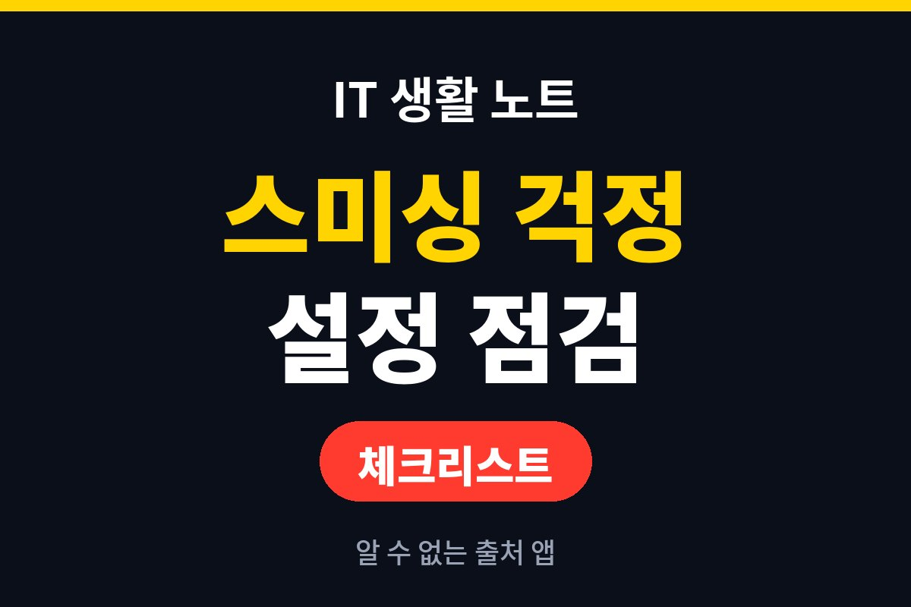
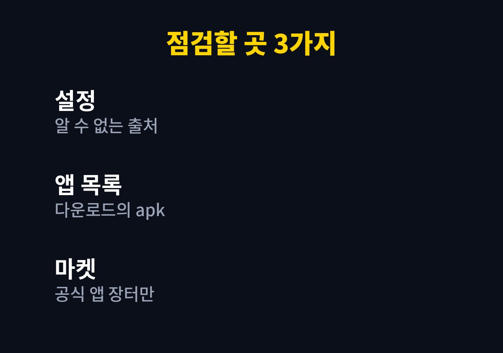
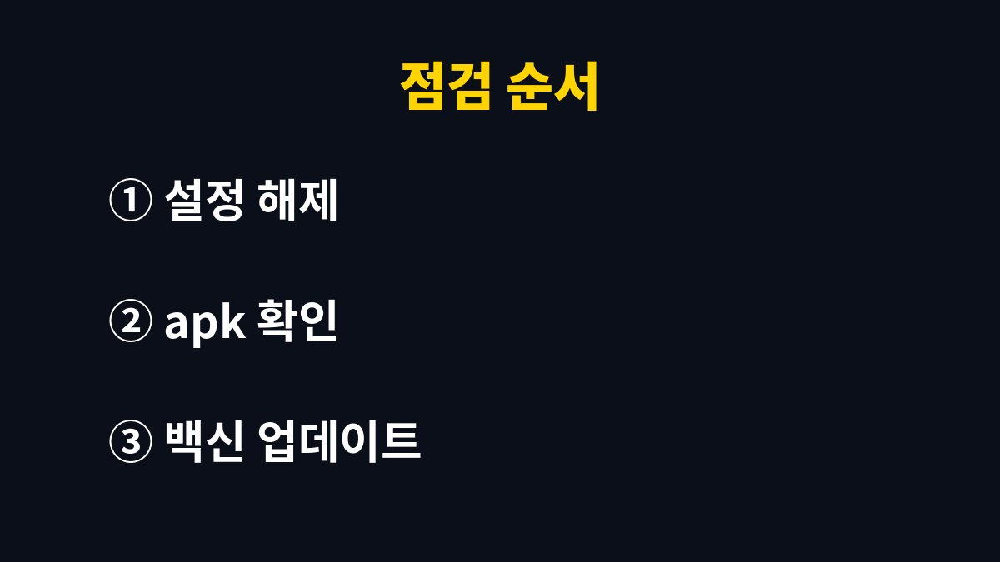

알 수 없는 출처 앱 설치 허용은 평소에 꺼 두어야 하는 설정이다.
이 설정이 켜진 채로 문자 속 링크를 누르면 악성 앱이 내려받아져 그대로 깔릴 수 있고, KISA 보호나라는 체크가 되어 있다면 해제하라고 안내한다.
2026년 11월 기준 안내를 바탕으로 확인할 위치와 점검 순서를 적었다.
안드로이드 스마트폰의 앱은 구글 플레이나 ONE스토어 같은 공인된 마켓에서 설치하는 것이 기본이다.
스미싱 문자의 링크가 내려받게 하는 apk 파일은 이 마켓을 거치지 않는다.
그래서 알 수 없는 출처 설치를 막아 두면 링크를 눌러도 설치 단계에서 한 번 걸린다.
설치를 허용하겠냐는 창이 떴을 때 승인을 눌러 버리면 결과는 같다.
보안 강화나 업데이트를 내세우며 금융정보를 입력하라는 화면이 나와도 입력하지 않는다.
설정은 문을 잠가 두는 일이고, 눌러서 여는 것은 결국 사용자다.
KISA 안내가 드는 대표 미끼는 무료쿠폰, 돌잔치 초대장, 모바일 청첩장이다.
지인이 보낸 문자라도 주소가 들어 있으면 누르기 전에 전화로 먼저 확인하라는 안내도 있다.
인증번호와 주소록, 사진 같은 정보가 한꺼번에 빠져나갈 수 있어 피해가 결제 한 건으로 끝나지 않는다.
KISA 안내문은 2023년에 올라온 글이라 메뉴 이름과 화면은 지금 기기와 다를 수 있다.
이름이 달라도 방향은 같으니 이 글의 표를 기준으로 하나씩 확인한다.
메뉴 이름은 기종과 안드로이드 버전마다 다르다.
KISA 안내에 적힌 예시 경로는 환경설정, 보안, 디바이스 관리, 알 수 없는 출처 순이다.
경로가 달라 헤맨다면 설정 검색창에 알 수 없는 출처를 넣어 찾는 쪽이 빠르다.
| 상황 | 확인할 곳 | 할 일 |
|---|---|---|
| 링크를 누른 적이 없다 | 알 수 없는 출처 설정 | 체크가 되어 있으면 해제한다 |
| 링크를 누른 뒤 앱이 깔린 것 같다 | 애플리케이션 관리자의 다운로드 | apk 파일이 있으면 삭제한다 |
| 삭제가 되지 않는다 | 서비스센터 또는 초기화 | 점검을 맡기거나 초기화한다 |
| 보안 강화 명목의 입력창이 뜬다 | 해당 화면 | 금융정보를 넣지 않고 닫는다 |

설정만 한 번 열어 보면 된다.
예전에 앱을 직접 내려받느라 허용을 켜 두고 그대로 둔 폰이 의외로 많다.
다만 앱을 직접 내려받아 쓰는 사람은 해제하면 그 앱이 설치되지 않는다.
필요한 앱만 설치한 뒤 다시 끄는 식으로 쓰면 된다.
설정의 애플리케이션 관리자에서 다운로드 항목을 열고, 링크를 누른 시점 이후에 생긴 apk 파일이 있는지 본다.
금전 피해가 없더라도 삭제가 안 되면 휴대전화 서비스센터를 방문하거나 스마트폰을 초기화하라는 것이 KISA 안내다.
공동인증서를 저장해 둔 폰이 감염됐다면 인증서를 재발급받는 편이 낫다고 한다.
시간이 걸리는 일은 아니지만, 지운 뒤에도 같은 문자가 다시 오면 그때는 링크가 아니라 문자 자체를 삭제한다.
의심이 가는 번호는 118에 상담하면 된다.
소액결제 차단과 피해 구제 절차는 통신사 114와 118 상담에서 안내받는다.
결제 피해가 의심되면 휴대전화로 114에 연결해 소액결제 차단 상담을 받는 것이 KISA 안내에 나온 방법이다.

오늘 점검을 끝냈다면 다음에 모르는 문자 링크가 왔을 때 누르지 않고 지우는 것까지가 한 세트다.
의심스러운 문자는 118에 신고하거나 상담받을 수 있다.
설정을 끄는 데는 1분도 걸리지 않지만, 한 번 깔린 악성 앱을 걷어 내는 일은 훨씬 번거롭다.
참고 자료: 한국인터넷진흥원 KISA 보호나라 「스미싱(Smishing)이란?」 안내(2026년 11월 확인)
※ 2026년 기준 공식 안내를 바탕으로 정리한 글이며, 기기·앱 버전에 따라 메뉴 이름이 다를 수 있다.